MapNG
MapNGThis one is about seeing what you will get. Most of it came from testers: a long list from one tester's alpine and rally maps, and a string of "what if the map showed me…" questions while the fixes were being checked.
🗺️ Three views, one Generate button
"Preview 3D" and "Generate Data" were two buttons for one job. Now there is one: Generate. Over the map are three tabs: Location (the world map, where you choose the area), 2D preview and 3D preview. Generate opens the 2D preview.
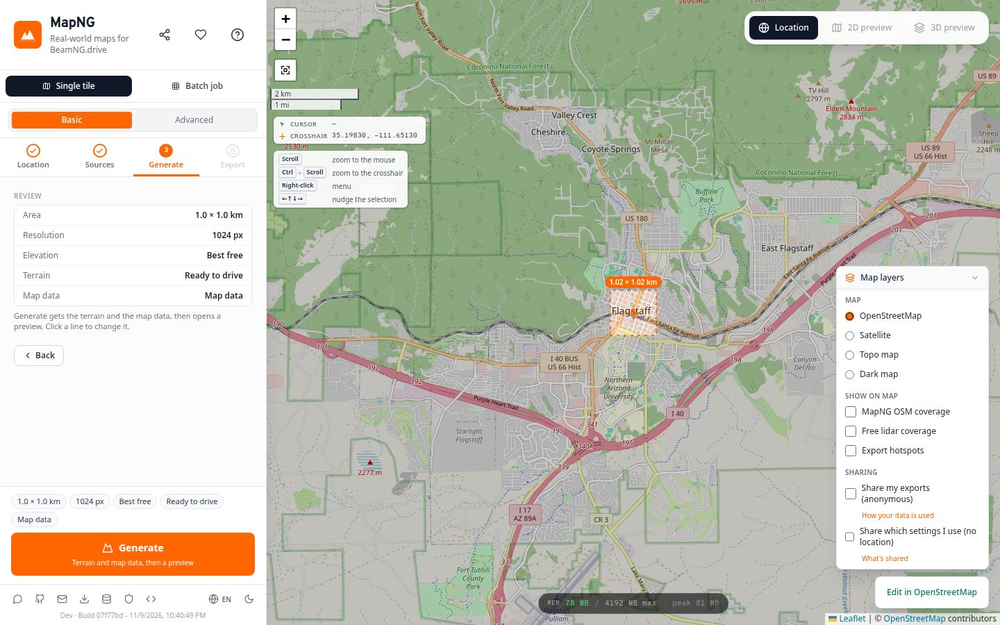
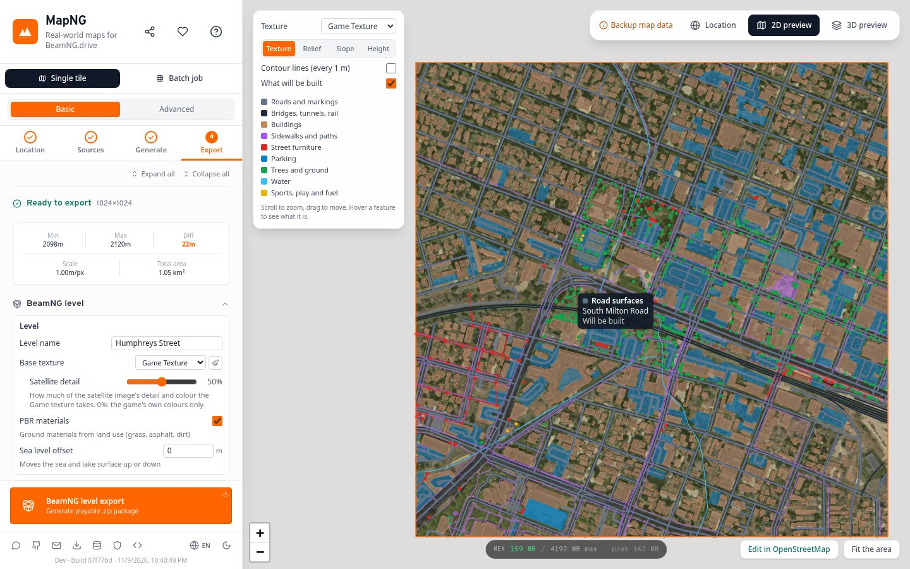
Why: the 3D scene is the heaviest thing MapNG shows, and many exports never needed it. Now only those who open it pay for it.
🔎 The 2D preview
The generated area under the base texture you chose, and over it what will be built, in the colour of its group. Switch a feature off in What to build and it fades on the map as you click. Hover anything to see what it is and whether it will be built. Scroll to zoom, drag to move.
Terrain views
The 3D preview's terrain views work here too, and the choice is shared between the two: Relief (the shape alone), Slope (what a car can climb, at a glance), Height, and contour lines over any of them.
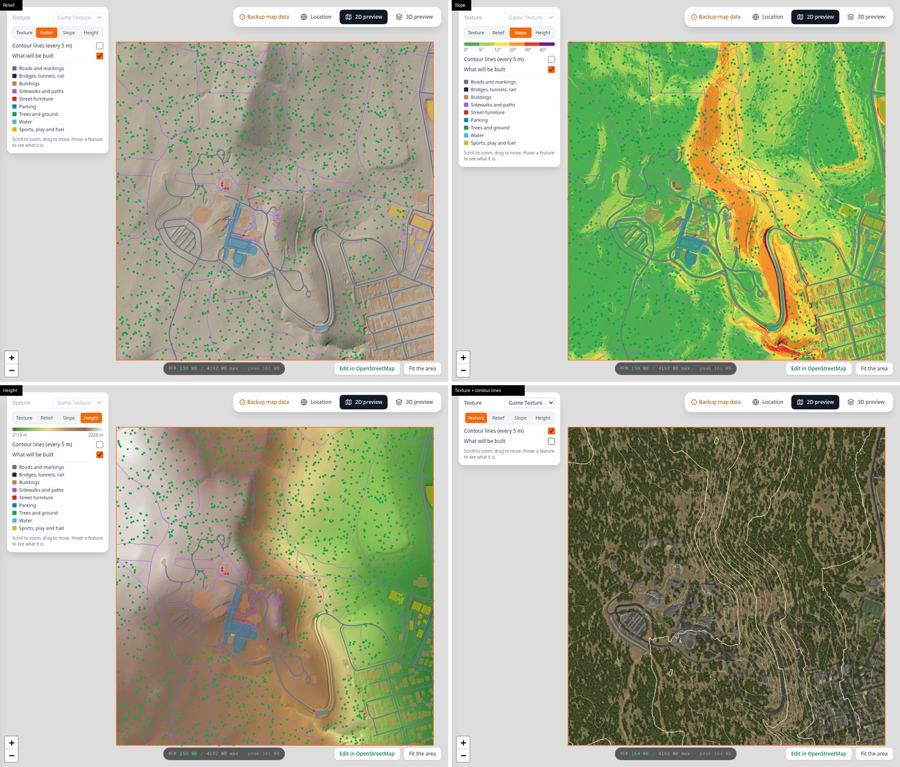
Something looks off in the map data?
Edit in OpenStreetMap (bottom right) opens OpenStreetMap's editor on the spot you are looking at. Most odd results trace back to how something is mapped; fixing it there fixes it for everyone.
🏞️ The backdrop, where you can see it
Choose a backdrop in the export panel and its eight surrounding tiles appear around your map in the 2D preview: the pictures and terrain the export downloaded, read back from the cache. Nothing extra is fetched for the preview, and a checkbox hides them.
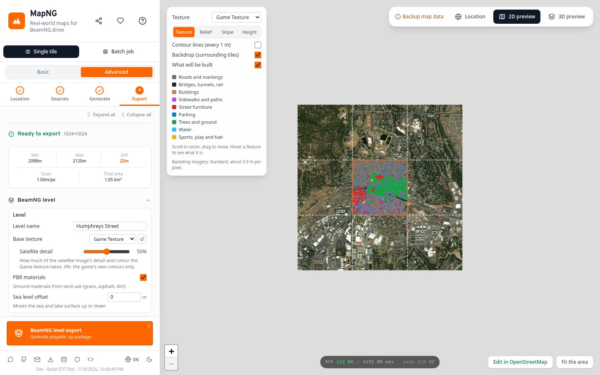
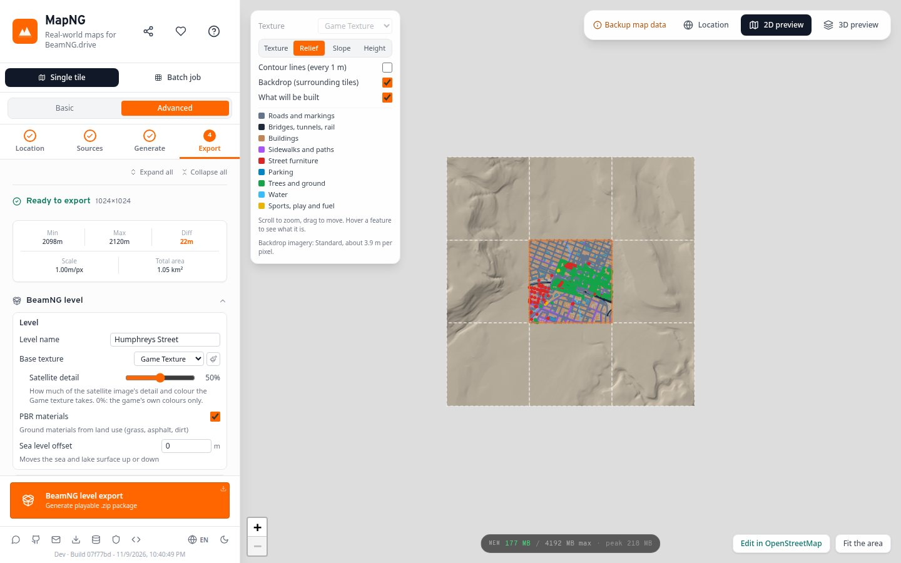
Backdrop imagery quality
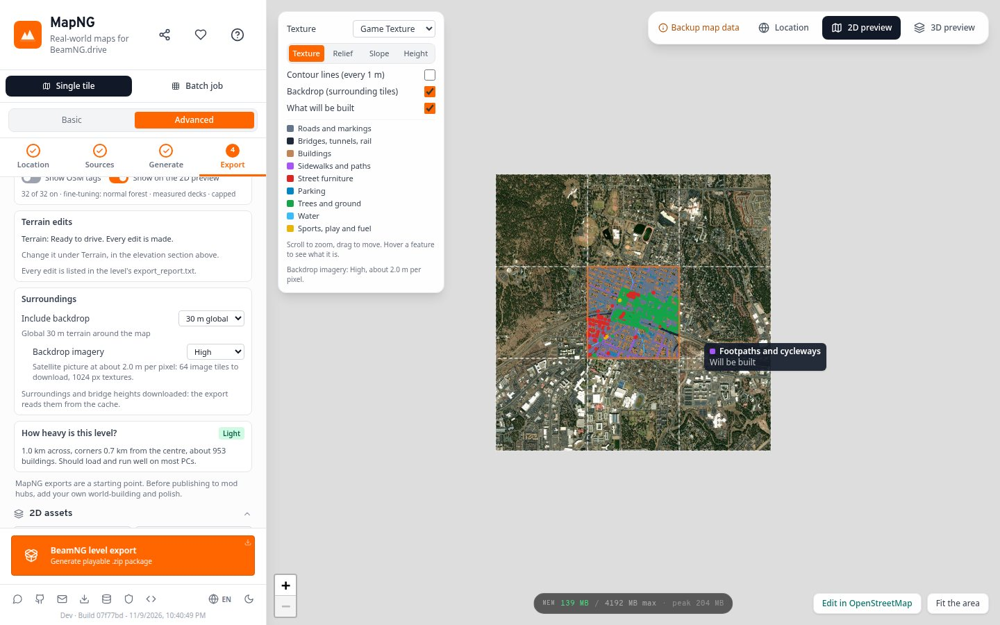
The backdrop is seen from a distance, so its picture has always been coarser than the map's own. Now it says so, and you can choose: Standard (as before), High or Very high. The panel shows the metres per pixel and how many image tiles that means.
A large area at a fine quality is a big picture to hold in memory. A browser tab is stepped down to what it can hold, and tells you; the desktop app has more room.
🎚️ Satellite detail, on a slider
The Game texture paints the ground in the game's own colours and blends in the satellite image's fine detail. How much is now yours to set: 0% is the game's colours alone, 50% is the look it has had, 100% takes twice the detail and colour.
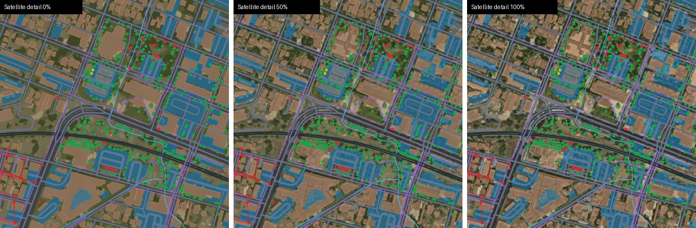
Behind the scenes: why it follows your hand
Painting the texture takes seconds, so a slider that repainted on every move would lag. The first time you touch it, MapNG paints the texture at 0% and 100% (it already has 50%). Every setting between is two of those three cross-faded, which takes a few milliseconds.
Both previews follow the slider. Textures larger than 4096 px a side are repainted when you let go instead, since the live version keeps three copies in memory.
🚇 Underpasses under a lid
A road that passes under a ski piste, a lawn or a freeway park is mapped as a tunnel, but there is only a few metres of ground over it: too little to bore through. On fine lidar data MapNG used to give up and leave the road on top of its own lid. Now it builds what is really there: a low concrete box with a flat roof, the road where it is, nothing dug.
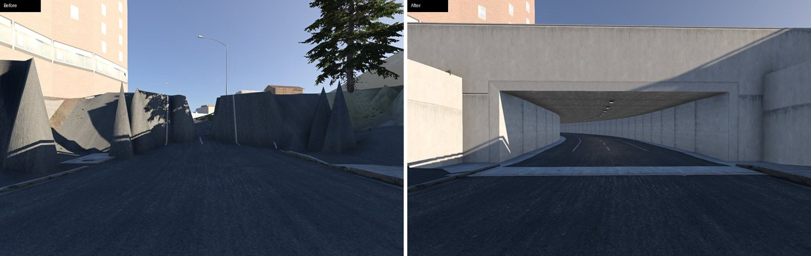
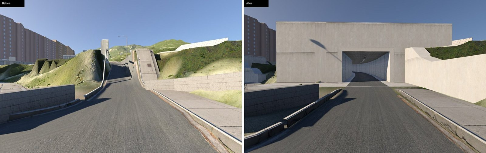
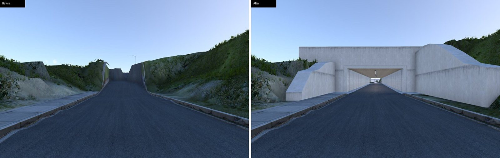
Checked against the real ones
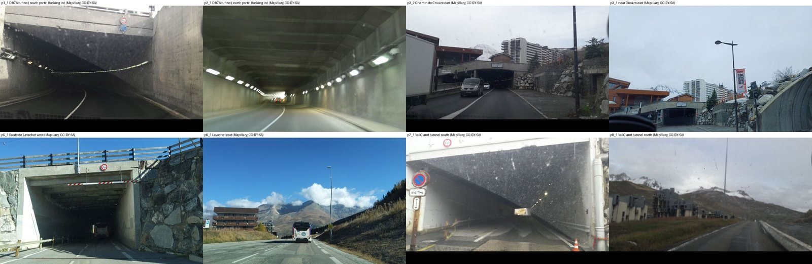
Behind the scenes: measured, not eyeballed
Two steps at these portals got past screenshots and were found by a tester driving in: a concrete apron sitting 0.4 m above the road, and a sill inside the opening. So the driving surface is now measured in game: a ray cast down every half metre along each tunnel, on the centre line and 1.2 m either side.
| Tunnel | Biggest change between points 0.5 m apart | Highest surface over the road line |
|---|---|---|
| Val Claret | 0.02 m (was 0.90) | 0.08 m (was 1.08) |
| Route de Lavachet | 0.07 m (was 0.80) | 0.05 m (was 1.03) |
| D 87A | 0.03 m | 0.05 m |
| Chemin de Crouze | 0.06 m | 0.05 m |
🏔️ Avalanche galleries
A gallery is a roof over a road on a mountainside. Fine lidar surveys take the roof out of the ground model and draw the hillside straight through, so the road ended up 1.5 to 2 m too high with a saw-toothed edge. And grass grew on the carriageway.
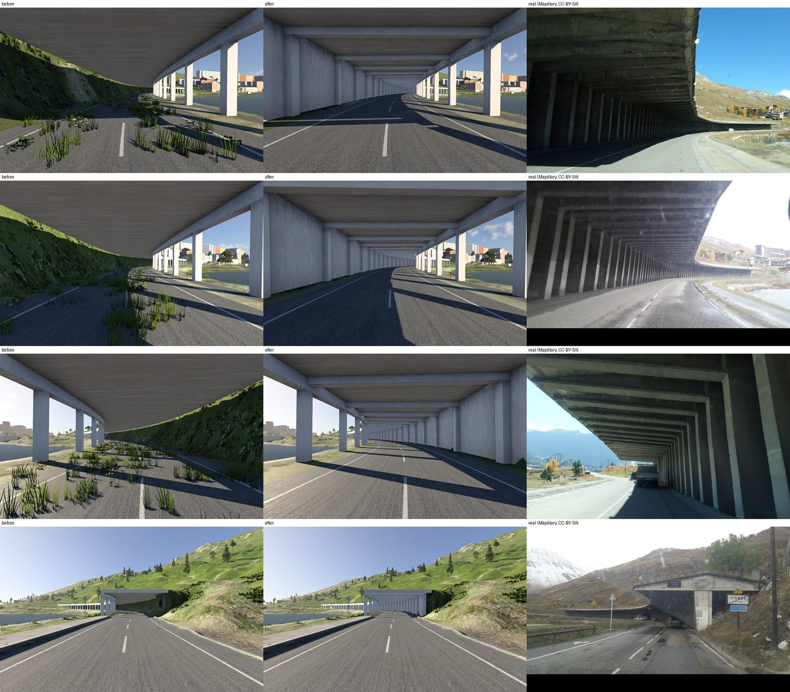
Behind the scenes
Where the survey shows a level road bench, the road is where it is. Where it does not (under the roof), the road's height is carried through from the stretches that have one, kept between the valley-side ground and the centre line. The valley side gets a verge level with the road.
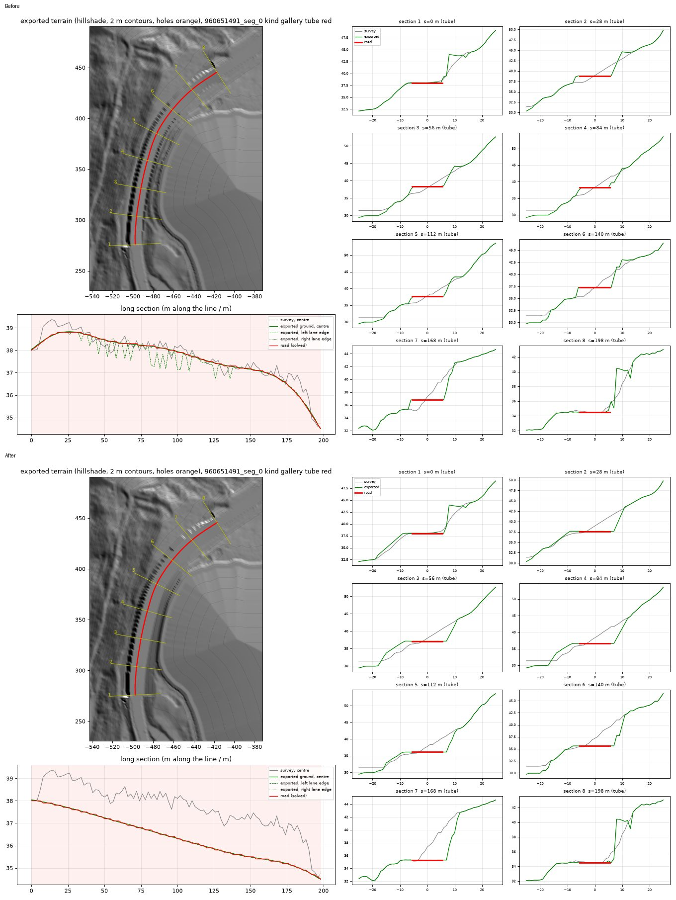
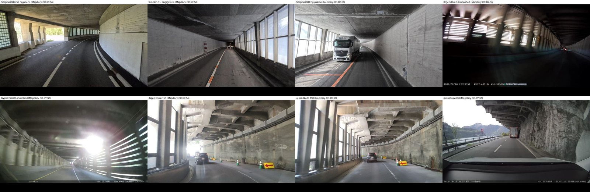
⚡ Faster, and quieter when idle
The backdrop
Choosing a backdrop used to freeze the map twice for six seconds. It looked like a slow download; it was one small filter that removes spikes from the surrounding terrain, sorting a fresh list twice for every one of a million samples a tile. It now gives the same result, sample for sample, in a fraction of the time.
The 3D preview
The preview drew every frame whether or not anything moved, and in Cinematic quality that is the dearest thing the window does. It now draws every frame while you move the view or change a setting, and a few a second while it sits still. Cinematic's pixel density is capped at 1.5×.
Progress cards
The Processing Terrain and Exporting cards now run on to 100% before they close; they used to vanish wherever their number had got to (74% on a four-second generate). Measured on a run each: the percentage never goes backwards, the biggest jump is 8 points.
🧰 Fixes
Roads that zigzagged across flat fields
On flat land with 1 m lidar, a step that pulls hillside roads onto their real benches was chasing ditches and field edges instead. It now only works on hillsides.
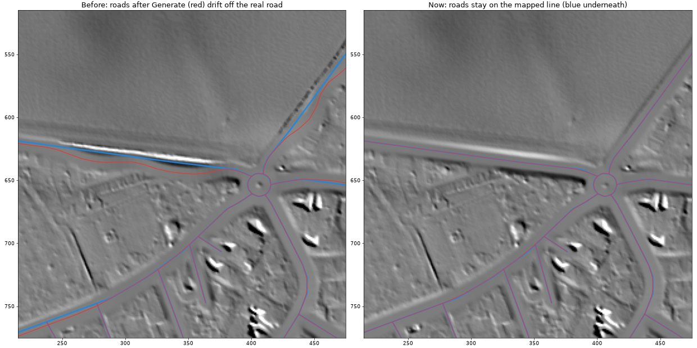
Phantom bridges at Val d'Isère
With OpenStreetMap's servers down, map data comes from a fallback source that lists some bridges twice. The duplicates were read as roads and stacked over their own originals: a 989 m "skyway" over the town. Each bridge is now read once.
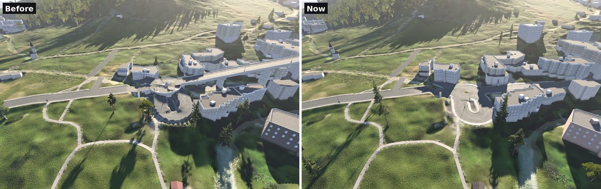
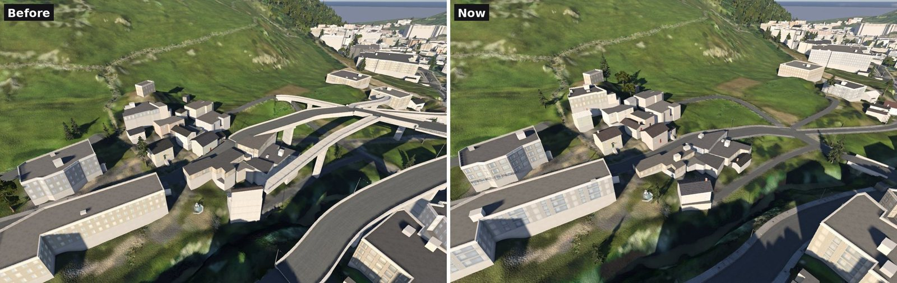
Lakes
Big lakes met their shores at a wall, and their beds showed the satellite's water colour through shallow water. Shores now ease down to the waterline, beds are painted as beds, and depth comes from the steeper shores.
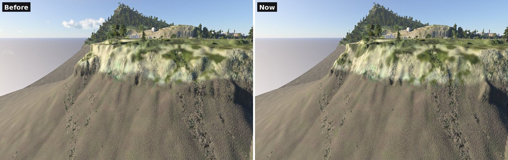
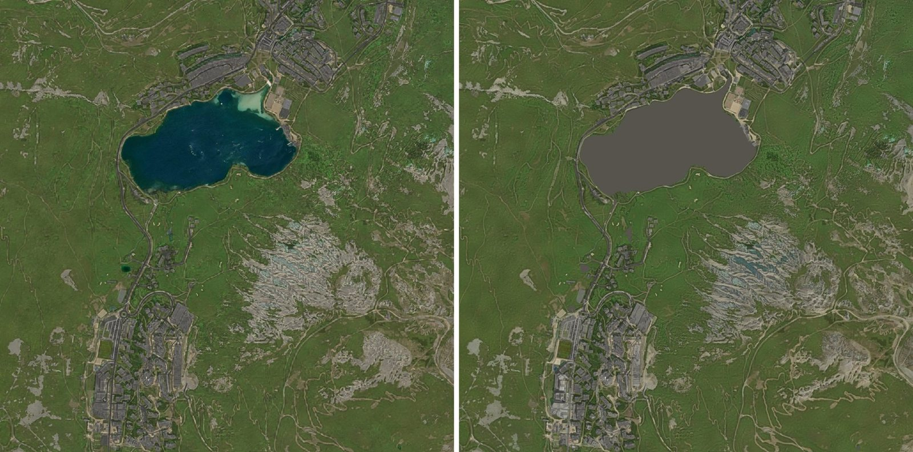
Teal rock in the shadows
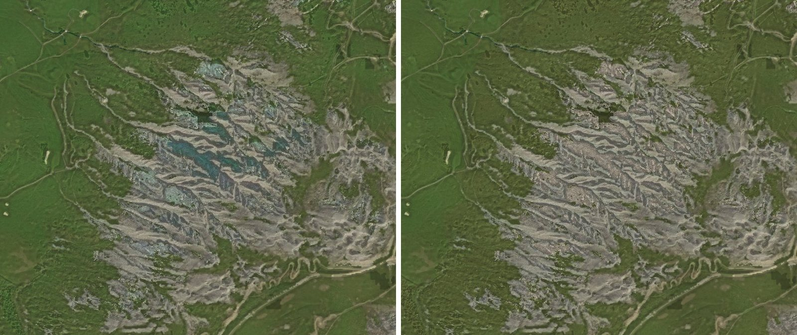
🙏 Thanks
Thanks to the tester who spent hours in the Alps and Normandy and wrote the list this update works through, and to everyone sending feedback in the Discord. Map data © OpenStreetMap contributors. Street-level reference photos from Mapillary contributors (CC BY-SA 4.0). Backdrop imagery © Esri.
Heads-up: the Windows build still isn't code-signed. If SmartScreen warns you, choose More info, then Run anyway.
Generate your home town, switch the 2D preview to Slope, and tell me what you see. Post in the MapNG Discord or open a GitHub issue. 🧡